The Galamian Mechanics
The Galamian method is a gold standard for a reason — it focuses on natural movement and "elasticity." Your foundation in holding the violin covers the physical setup, but to truly excel, you need to understand the functional mechanics of the hold. Below are the essential additions that will elevate your technique from simply "holding the instrument" to being ready to play.
Left Hand — The Support Hand
A common beginner mistake is "pancaking" the palm against the neck of the violin. This collapses the hand and makes it nearly impossible to shift or develop vibrato later on.
The Fix: Maintain a small gap or "window" between the base of the index finger and the thumb. Think of it as a gentle "V" shape — you should be able to see light through the gap. This ensures the hand can shift and vibrato freely.
✓ The CheckLook at your left hand from the front. Can you see a small triangle of daylight between the neck, thumb, and index finger base? If yes, you're in the right position.
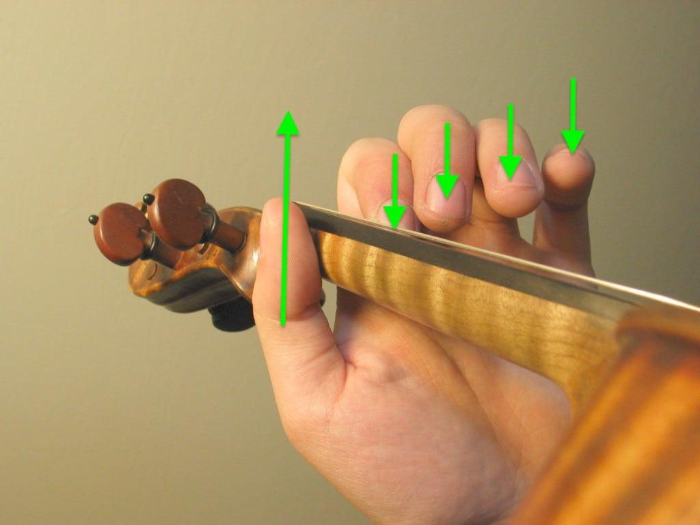
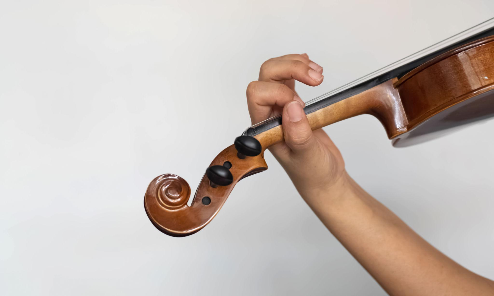
The wrist is the "hinge" of the whole left hand operation. A collapsed or pushed-out wrist is one of the most common causes of tension and limited finger reach.
The Fix: Keep the left wrist straight. It should form a continuous, unbroken line with the forearm — as if you could lay a ruler along the back of your forearm and wrist without any gap.
- Collapsed wrist (bending toward the neck) → creates tension, limits finger stretch
- Pushed out wrist (bending toward the scroll) → creates strain, makes finger accuracy difficult
- Straight wrist (continuous line with forearm) → ✓ optimal position
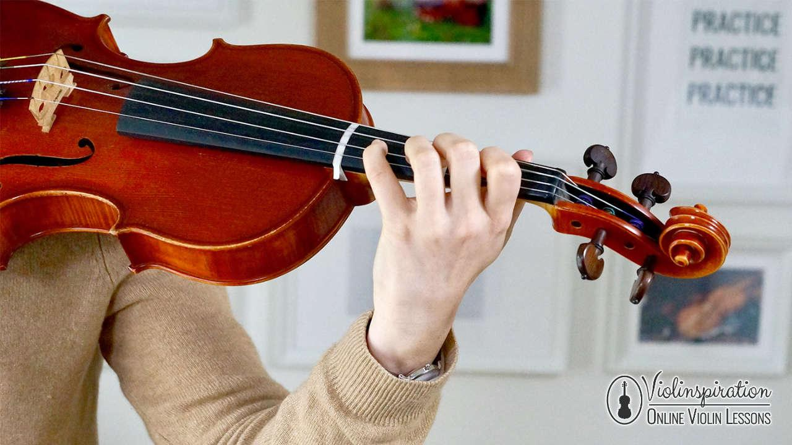
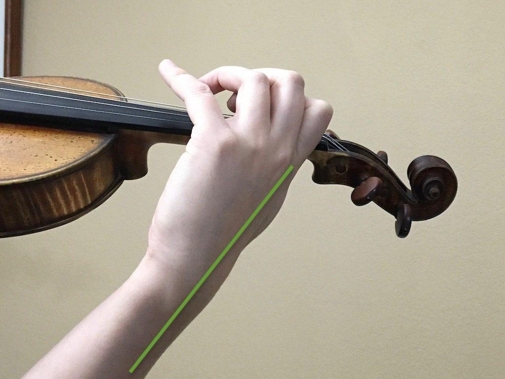
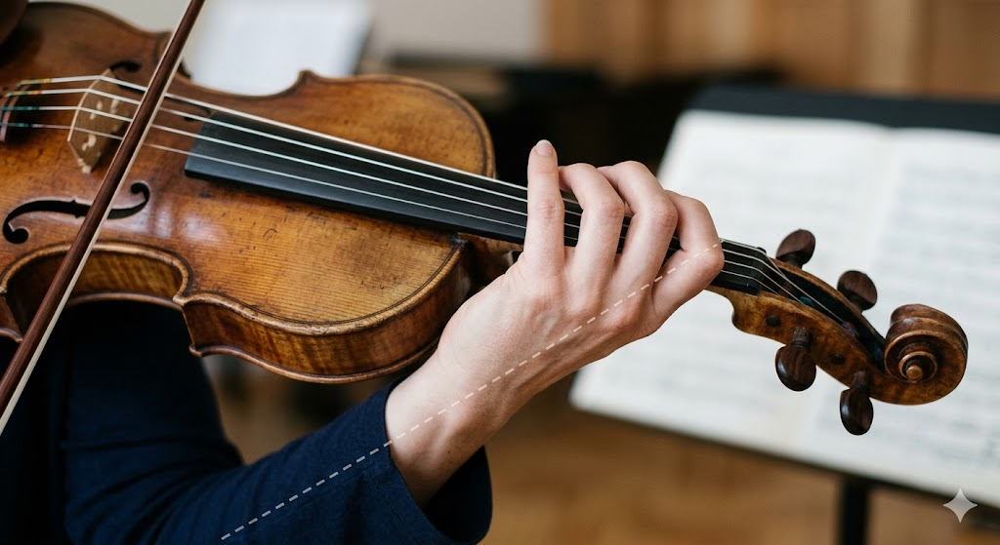
The thumb is often the source of secret tension. Many beginners lock their thumb in place and squeeze the neck, which leads to a tight, immobile hand.
The Refinement: The thumb should remain mobile. As you play on lower strings (G and D), the thumb might need to move slightly under the neck to help the fingers reach. It should never be "locked" in one spot.
✓ The CheckWhile holding the violin in playing position, try to wiggle your thumb gently. If it can move freely, you're doing it right. If it's frozen in place, you're gripping too hard.
To avoid the "death grip" on the neck, it's essential to understand how the violin is actually supported. The instrument is balanced between three points:
- The collarbone / shoulder — the violin body rests here
- The jaw — resting, not pressing — gentle head weight holds the instrument
- The base of the left index finger / thumb — light contact for guidance, not gripping
You should be able to support the violin briefly without using your left hand at all — using just the weight of your head and the collarbone/shoulder rest. If you can do this, your hold is balanced. If the violin immediately falls, adjust your chin rest or shoulder rest setup.
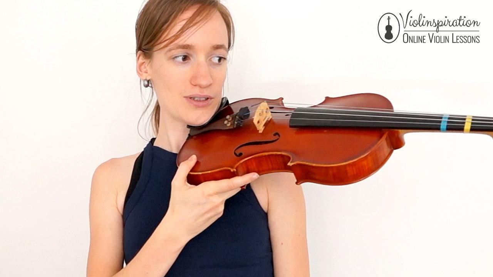

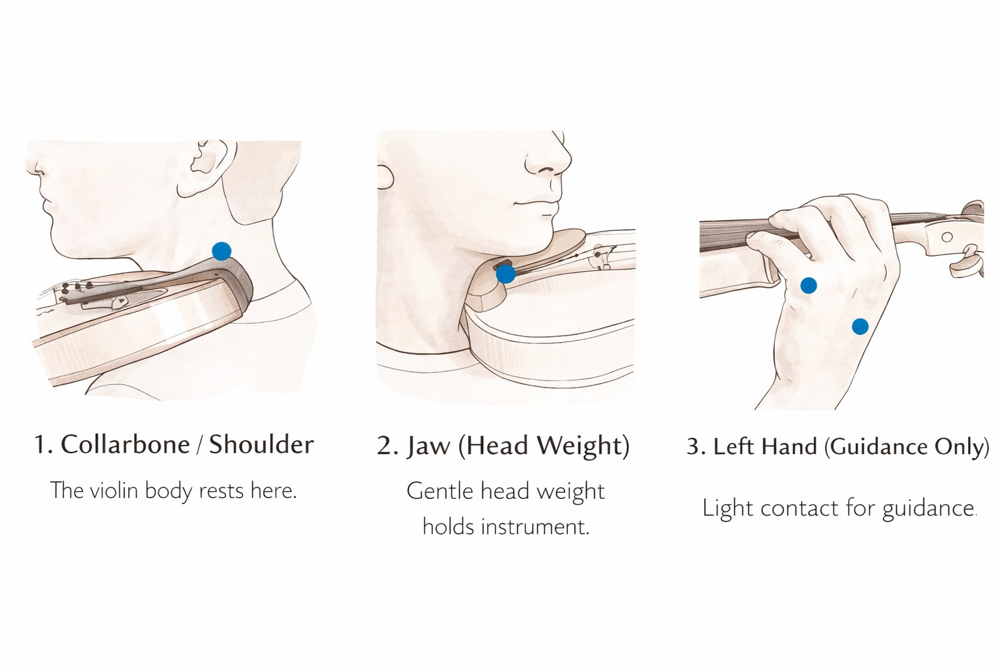
The left elbow isn't static — it acts like a pendulum that swings to help the fingers reach different strings naturally.
- When playing on the G string (the thickest): the left elbow should swing slightly to the right (under the violin) to allow the fingers to curve properly over the fingerboard
- For the E string: it swings back to the left
This swinging motion is subtle but crucial. Without it, you'll struggle to reach the lower strings with properly curved fingers.
A quick alignment tip: generally, your nose should point roughly toward the bridge of the violin. This ensures your neck isn't twisted too far to the left, which is a major cause of long-term strain and discomfort.
| Feature | Key Tip |
|---|---|
| Wrist | Keep it straight; avoid the "pancake" palm. Form a continuous line with the forearm. |
| Elbow | Swing it inward to reach the lower strings (G and D). Let it move naturally. |
| The "Window" | Keep a visible space between the thumb and index finger base. Never let the palm collapse. |
| Head Weight | Use the weight of the head, not the muscles of the neck, to hold the violin. |
| Thumb | Stay mobile. Should be able to wiggle at any time. Never lock or squeeze. |
From Static Hold to Active Playing
Now we move from the "static" hold to the "active" hold. Since you've already covered the Galamian basics, these additions will help you bridge the gap between just holding the instrument and actually playing it.
Most beginners struggle with the 4th finger (the pinky). It is naturally weaker and shorter than the other fingers.
The Tip: The pinky should always stay curved and hovering over the strings — never tucked under the neck or flattened out. Think of a curved pinky as a loaded spring, ready to drop.
✓ The CheckIf the pinky is flat, the hand is likely too tight. A curved pinky acts like a spring, providing the necessary leverage to press the string without straining the rest of the hand.
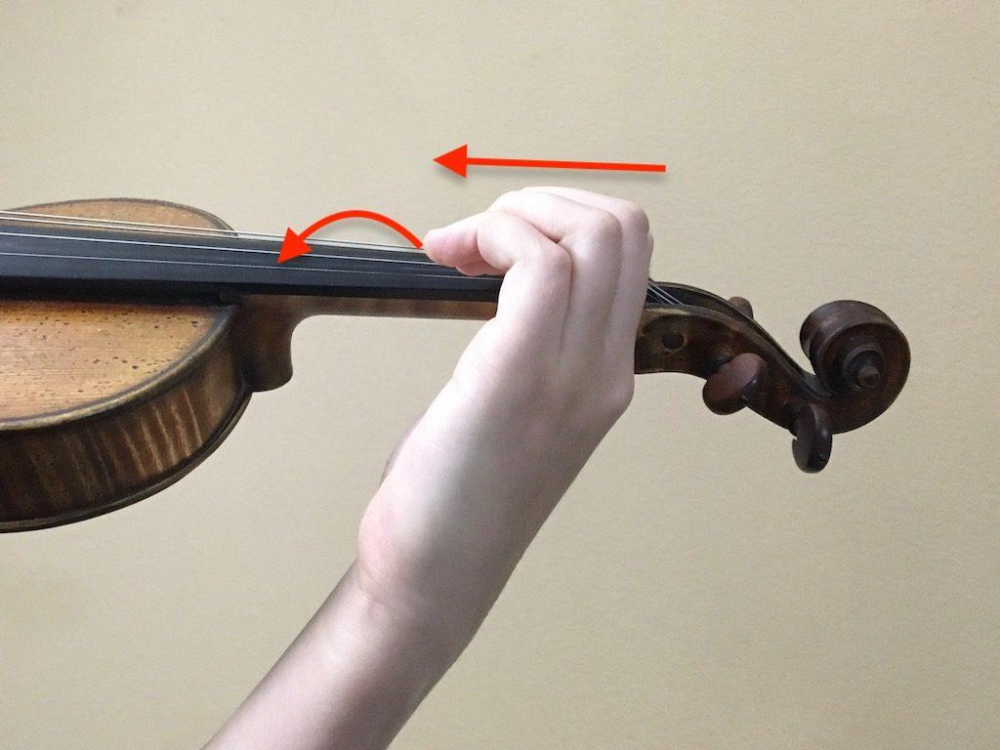
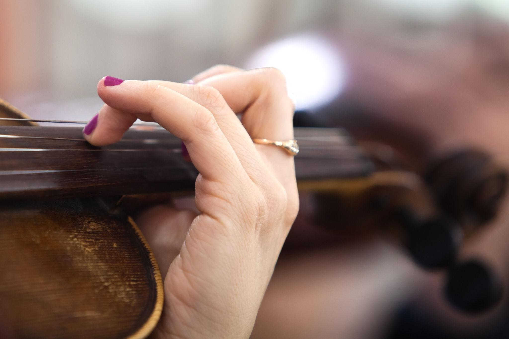
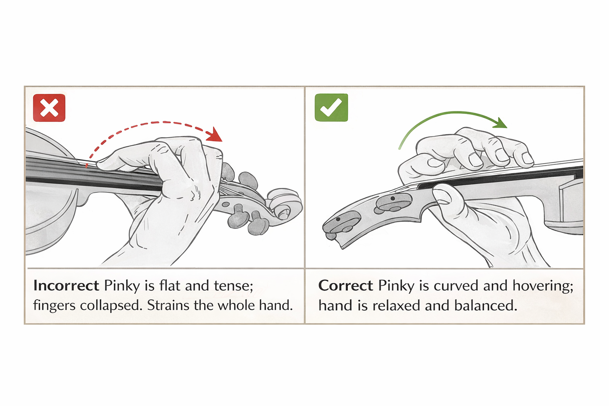
Beginners often try to "crush" the strings with their fingers, which slows them down and causes pain in the fingertips and hand.
The Concept: Fingers should drop onto the string like small hammers — quick, light, and precise. Think of the motion as a "tap" rather than a "push."
The Rule: You only need enough pressure to stop the string against the fingerboard. Once the note sounds clearly, any extra pressure is just wasted energy (and tension). Less force = more speed and agility later on.
Right Arm — Bow Arm Prep
Even in a section about "Holding the Violin," the right arm needs attention because its position fundamentally changes how you hold and balance the instrument. The bow arm and the support arm must work together as a coordinated system.
The Tip: Ensure the right shoulder is dropped and relaxed. Beginners often subconsciously "shrug" their right shoulder when concentrating on their left hand, which leads to quick fatigue and tension throughout the upper body.
✓ The Breathing TestCan you take a deep breath and let your shoulders "melt" down while keeping the violin in playing position? If you feel your shoulders drop noticeably, you were holding tension. Make this breathing check a regular part of your practice.
dropped and relaxed
"shrugged" with tension
Instrument Maintenance — The "Health" of the Hold
Sometimes the "hold" feels wrong because of the equipment, not the technique. The shoulder rest is the most common culprit.
- Long neck? → Unscrew the feet of the shoulder rest to make it taller
- Short neck? → Keep the shoulder rest low — or even consider going without one (some players prefer a sponge or pad)
Visual Check: The violin should be parallel to the floor. If the scroll is diving toward the ground, the shoulder rest is likely too low or positioned too far back on the violin body.
✓ The Scroll TestStand in front of a mirror. The scroll should be at roughly eye level or slightly above. If it's pointing toward the floor, adjustment is needed.
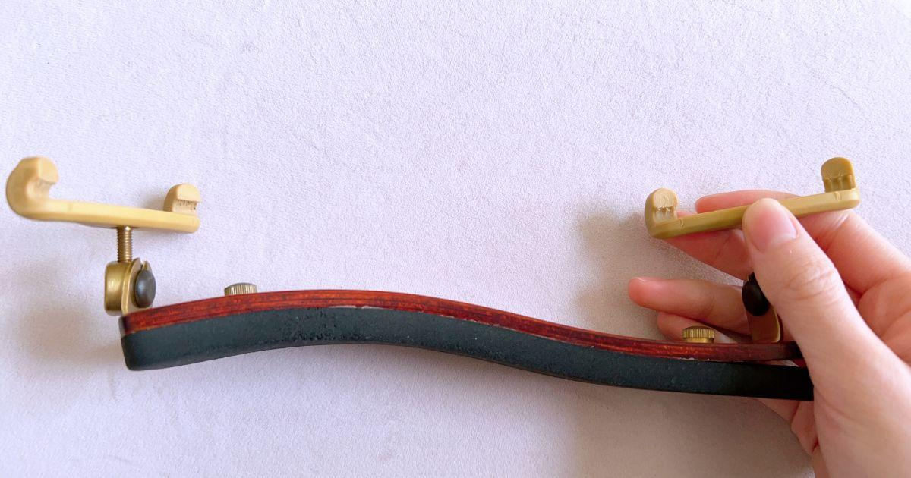
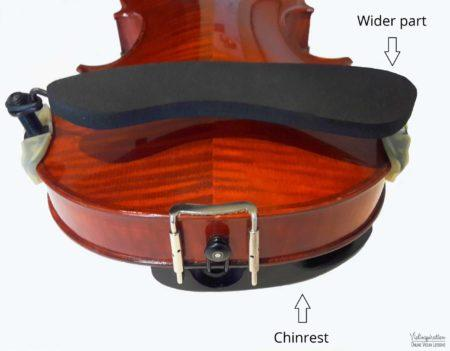
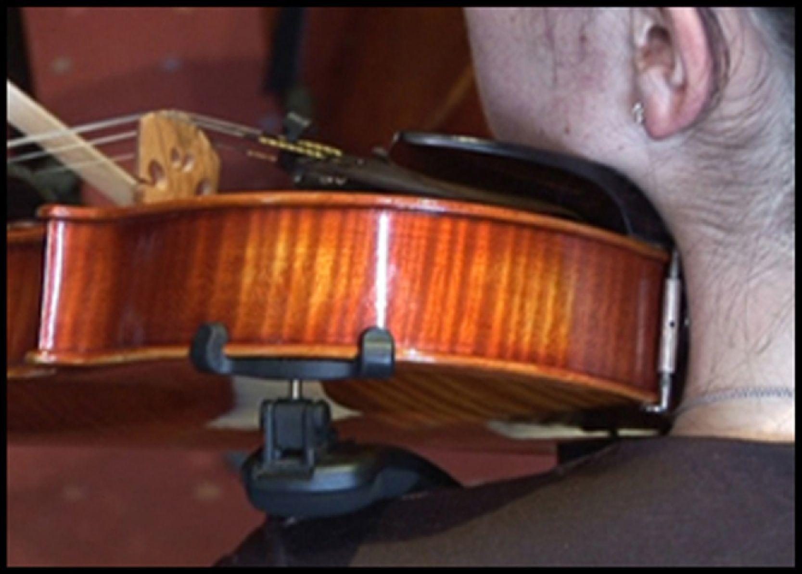
| Topic | The Beginner "Fix" |
|---|---|
| The Pinky | Keep it "curved and ready," never tucked or straight. It should hover over the strings. |
| Finger Pressure | Aim for a "light tap" rather than a "heavy squeeze." Only enough to stop the string. |
| Right Shoulder | Must stay down and neutral; don't let it "shrug." Check regularly with a deep breath. |
| Scroll Height | Keep the scroll at eye level; don't let it "dip." Adjust shoulder rest if needed. |
Tension Hotspot Map
These are the "Tension Hotspots" — the most common areas where beginners unknowingly hold excessive tension. Check each one regularly during your practice sessions.
Practice Techniques — Building Your Hold
Knowing the theory behind holding the violin is only half the battle. Below are structured, practical exercises you can do on your own to build a comfortable, tension-free hold. Aim to practice these daily for the first 4–6 weeks until the correct posture becomes automatic muscle memory.
• Scroll at eye level? ✓
• Nose pointing toward the bridge? ✓
• "Window" between thumb and index finger? ✓
• Wrist straight? ✓
• Shoulders down? ✓
Do this at the start of every practice session.